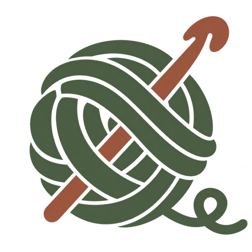

Making your crochet…
Drag to turn · Scroll to zoom · Shift + drag to move
Finished piece
Choose a stitch to see how it joins the fabric.

loopDrag to turn · Scroll to zoom · Shift + drag to move
Choose a stitch to see how it joins the fabric.